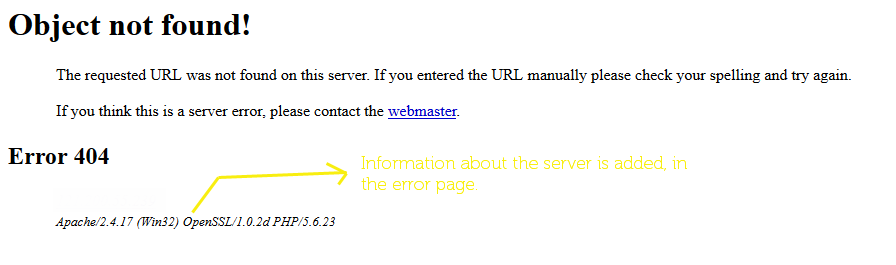

Information gathering(in penetration testing) is the act of collecting various valuabe informations from the remote host. The more information we obtain it from a server the more specific an attack can be crafted, vulnerabilities can be exploited. So Siva handles various methodologies to gather the information about the web-server.
An I.P address is an adress which is used to identify the remote host. Web-Hackery is impossible without getting the real I.P address of the remote host. Some firewalls make it difficult to get the I.P address of the remote Host. They will replace their I.P address to the remote host’s I.P address inorder to prevent some famous attacks like Denial Of Service(DOS) and Distributed Denial Of Service(DDOS). Since the real I.P address is masked by the I.P addresses of WAF vendors(say cloudlflare) one cannot proceed pentesting the remote host without getting their real I.P address. Siva uses various methods to detect the presence of WAF in the remote host. There are three different firewalls, Network based, Host Based and Cloud based WAF. Phase-1 of Siva will detect the presence cloud-based web-application firewalls only.
Siva will send a HTTP request to the I.P address(usually port 80) and will get the response object for further analysis. These are the symptoms exibited by the remote host which uses a Web Application Firewall
1. The status code for the request is always 403. 2. The title of webpage will have the name of the WAF vendor. 3. The body of the webpage contains the name of the WAF vendor. 4. The body will contain informations like Request ID, Ray ID etc., and Name of the vendor
All WAF vendors used the above four rules, Siva uses the above rules with already analysed information to know the WAF vendors. e.g Cloudflare, Incapsula etc., So by now Siva could have identified whether the remote host is protected by a WAF or not. Getting the real I.P address of the remote host will be discuessed later in this chapter. Incase, if Siva didn’t suspect any firewall activity it will move to gather further information.
Web-server is a software which is used to serve the wepages for the remote clients to connect. Knowing what webserver a remote host uses is a value added adavntage for knowing the known vulnerabilites of a webserver and for crafting attacks specific to the webserver. For example apache server has a well known vulnerability for the slow loris attack.
There are vaious specific ways a webserver can reveal an information about itself.
1. Send a bad get request to the port 80 of the I.P address and analyse the response of the web-server. It could have added the information about iteself very briefly which is very useful for us.
2. See how the webserver handles the 404 Not Found request, it could have revealed the information about itself like this,
The above method for fingerprinting quiet applies to this method too, since the header and 404 page will reveal the information about the operation system.
In addition, to the above methods for fingerprinting the webserver, there is an unique no named session id the website will assign it for the user. The name of the session id will reveal the information about the programming language used. For example if the name of session id is “PHPSESSID” then the language used is most probably is PHP.
Note: This is the first phase of the Siva scanner which only gathers these information. Siva does not perform any additional checks on the gathered information. Since, all these informations can be faked by a clever web-master first phase is not always reliable.
Note: This documentation is constantly update and might be broken